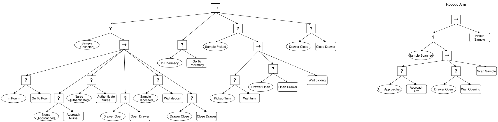
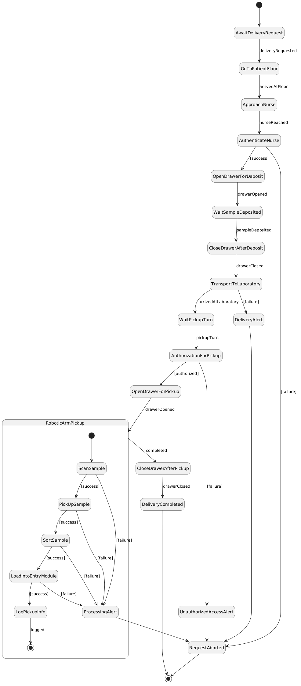
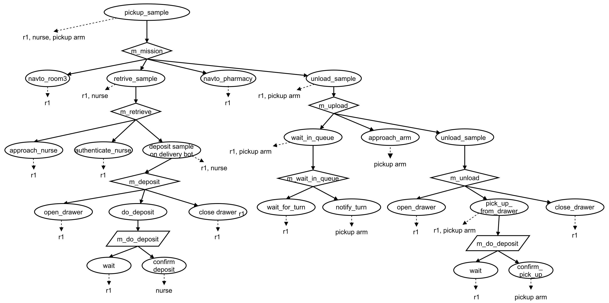
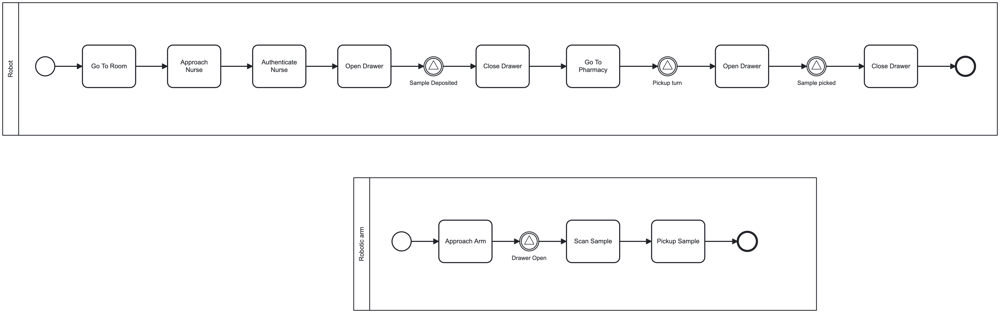

Lab samples should be transported from patient floors to the laboratory. A nurse responsible for collecting a sample can request a delivery to the laboratory. Each sample before collection is identified with a barcode. The nurse inserts data about the sample in a track system. Samples are transported in secure locked drawers. In the laboratory, the sample can be picked by a robotic arm or laboratory personnel. Only authorized personnel or specific robots in specific locations should be able to open the locked drawers. The robotic arm picks up samples, scans the barcode in each sample, sorts, and loads the samples into the entry-module of the analysis machines. Information about where and when a given sample was picked should be logged securely. The time between sample collection and laboratory delivery should be tracked to be sure that it goes according to laboratory protocols.
Askarpour, Mehrnoosh, et al. Robomax: Robotic mission adaptation exemplars. 2021 International Symposium on Software Engineering for Adaptive and Self-Managing Systems (SEAMS). IEEE, 2021.



